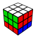
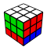

U
U'
U2
D
D'
D2
 R
RR'
R2
L
L'
L2
F
F'
F2
B
B'
B2
This page describes the classic Singmaster notation for the Rubik's cube, with some commonly used additions.
Each of the six faces of the cube is assigned a letter:
| U | Upper face |
| D | Down face |
| R | Right face |
| L | Left face |
| F | Front face |
| B | Back face |
A single letter (like U) denotes a 90° turn clockwise, a letter followed by a single quote (like U') denotes a 90° turn counter-clockwise, and a letter followed by a 2 (like U2) denotes a 180° turn.
Basic moves are summarized in the following table (white face on top and green face on front):
U |
U' |
U2 |
D |
D' |
D2 |
| R |
R' |
R2 |
L |
L' |
L2 |
F |
F' |
F2 |
B |
B' |
B2 |
Note: "clockwise" or "counter-clockwise" is always intended when looking at the face you are turning. This is why from the pictures above it looks like, for example, U and D go in opposite directions.
If this sounds confusing, think about it: if you put a clock face down on the table, does it turn clockwise or counter-clockwise?
Sometimes it is convenient to start a move sequence with the cube in a different orientation. To denote this, it is common to use the "moves" x, y and z that denote a full-cube rotation:
| x | Follows R |
| y | Follows U |
| z | Follows F |
The same modifiers can be applied, so for example x2 is a full-cube rotation that follows R2 (or, equivalently, L2) and z' is a a full-cube rotation that follows F' (or, equivalently, B).
Moving two parallel layers of the cube, one clockwise and one counter-clockwise, has the same effect as moving the inner layer between them. We usually denote these inner-layer moves by M, E and S.
| M | Follows L |
| E | Follows D |
| S | Follows F |
M |
E |
S |
The same modifiers can be applied, so for example M2 means moving the inner layer between R and L by 180°.
Note 1: unfortunately, the notation for inner-layer moves is not consistent with that for full-cube rotations. For example x follows R but M follows L.
Note 2: Inner-layer moves can always be rewritten as a combination of basic moves and full-cube rotations. For example, M' is equivalent to x R' L.